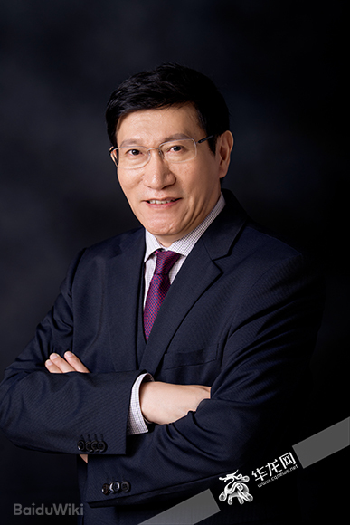
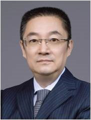
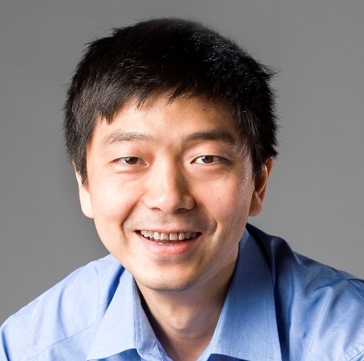

Confirmed Presenters
Presenter information below follows the current conference document and replaces the previous workshop roster.

Prof. Xiu-Wu Bian
Academician Xiu-Wu Bian, MD, PhD, is a world-renowned pathologist and a member of the Chinese Academy of Sciences. He serves as the Director of the Institute of Pathology and the Southwest Cancer Center at the Army Medical University. Prof. Bian is a pioneer in the study of cancer stem cells and the tumor microenvironment, particularly in gliomas. His work has significantly advanced the understanding of tumor angiogenesis and invasion. In recent years, he has spearheaded the integration of digital pathology and AI for precision diagnosis, leading the Jinfeng Pathology Precision Diagnosis Center. He has published over 250 papers in prestigious journals such as Nature, Cell, and Science, with an h-index exceeding 60.

Prof. Zhe Wang
Zhe Wang, MD, PhD, is a Professor and Director of the Department of Pathology at Xijing Hospital, Air Force Medical University. He also serves as a key researcher at the State Key Laboratory of Cancer Biology. Prof. Wang's research focuses on computational pathology and the development of AI foundation models for clinical-grade diagnostics. Notably, his team developed PathOrchestra, a comprehensive foundation model for multi-task histopathology analysis. His work bridges the gap between traditional pathology and AI-driven precision medicine, with numerous publications in journals like Nature Medicine and Nature Communications. He is a leading figure in the clinical translation of AI tools for cancer diagnosis in China.
Prof. Zhi Huang
Zhi Huang, PhD, is a tenure-track Assistant Professor at the University of Pennsylvania. He previously completed a postdoctoral fellowship at Stanford University under Professors James Zou and Thomas Montine and earned his PhD from Purdue University. Dr. Huang is a rising star in vision-language models for pathology. He is the lead author of the landmark Nature Medicine (2023) cover article on PLIP (Pathology Language-Image Pretraining), which utilized medical social media data to train AI. His research focuses on human-AI collaboration and the development of foundation models that enhance diagnostic accuracy and knowledge sharing in digital pathology.

Prof. Hoifung Poon
Hoifung Poon, PhD, is the General Manager at Microsoft Research Health Futures, where he leads the real-world evidence and precision health initiatives. He is also an affiliated faculty member at the University of Washington Medical School. Dr. Poon is a leader in biomedical natural language processing and multimodal AI. His team developed influential models such as PubMedBERT and BioGPT. His recent work focuses on whole-slide foundation models, including a significant 2024 publication in Nature regarding digital pathology from real-world data. He has received multiple Best Paper Awards at top AI conferences like NAACL and EMNLP for his contributions to machine reading and precision medicine.
Prof. Ronald Chan
Dr. Cheong Kin Ronald Chan is a Consultant at the Hospital Authority, NTEC (Pathology), and Lab Director of North District Hospital, as well as an Honorary Clinical Associate Professor at the Department of Anatomical and Cellular Pathology, The Chinese University of Hong Kong. He leads the Pathology Artificial Intelligence Development and Assessment Laboratory. Dr. Chan has published numerous papers in reputable journals and conferences, contributing significantly to the fields of digital pathology and artificial intelligence. His work includes over 30 publications, with notable journals such as Diagnostic Cytopathology, The Oncologist, and Advanced Science. He has received several awards, including the Teachers of the Year Awards from the Faculty of Medicine, CUHK in 2021 and 2023. Dr. Chan has also been involved in multiple grants related to digital pathology and AI, serving as Principal Investigator on several key projects.
Prof. Gary Tse
Prof. Tse is the Chairman and Professor in the Department of Anatomical and Cellular Pathology. He is also the Honorary Chief of Service of the Departments of Pathology of Alice Ho Miu Ling Nethersole Hospital and North District Hospital. A pathologist by training, he has active interests in breast histologic, cytologic and molecular pathology. His research focuses on the evaluation of prognostic factors in breast cancers, molecular classification of breast disease, understanding molecular basis in morphological features and their application for clinical decision in routine management. He is widely engaged in local and overseas professional bodies, including ICCR dataset in breast pathology, the TCGA breast group external pathology committee, and WHO breast tumor classification. He is active in organizing educational activities and serves in multiple international pathology and cytology leadership roles.